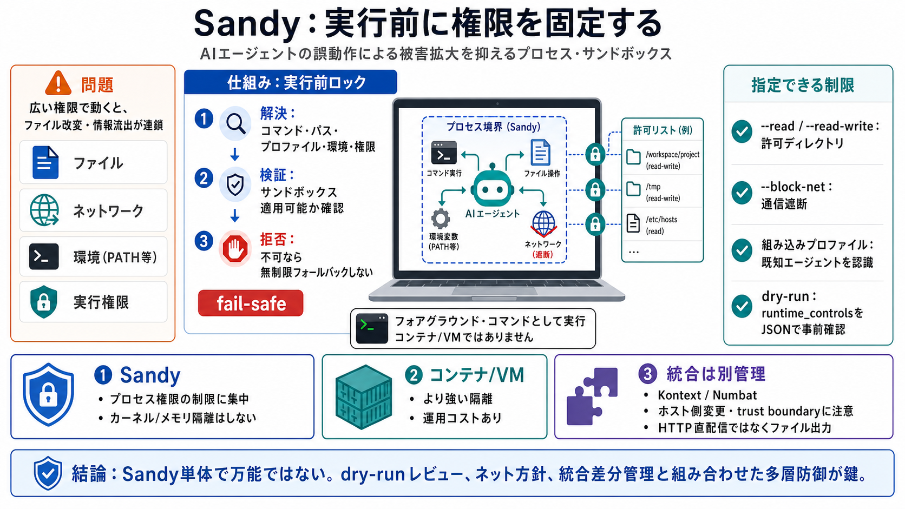

sandbox/mac - chromium/src - Git at Google
sandbox/mac/README.md # The Mac Sandbox The Mac sandbox provides an API for restricting the capabilities of a process.…

sandbox/mac/README.md # The Mac Sandbox The Mac sandbox provides an API for restricting the capabilities of a process.…
can happily rely on implementation details of system frameworks in their policies because they can update them as the sy…
Seatbelt does not place restrictions on memory allocation, threading, or access to previously opened OS facilities. As a…
## Seatbelt Seatbelt is the low-level sandboxing facility in macOS. It is one of the pieces behind the strong sandboxin…
For systems requiring local, trusted, low-overhead code execution (e.g., plugin platforms, automation agents, edge compu…